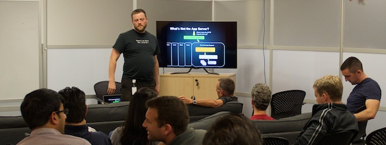

Finding the right people takes months of expensive work. It takes irreplaceable engineering time away from your product. Wondering if a candidate is right for you? Deciding wrong costs thousands more. The best decisions are easy, if you can find the right candidate with the right all-around skills. You need a technical leader now, with up-to-date skills to hit the ground running. But you also need the communications skills to raise the bar in the long run.
You want to hire me as that technical leader — though you may not know it yet.
But first, are you...?
(Or just keep reading...)Looking for a lead software engineer? I've been technical lead, manager or lead engineer on small, productive teams at my last few companies. I turn a list of priorities into team goals and make them happen. I'm comfortable operating independently — for instance, when repairing and rebuilding OnLive's unmaintained analytics system with the simple mandate "find out how it works, fix it, extend it, don't break production."
His breadth of knowledge around big data / Cassandra and RoR is unlike any I have ever seen.
Austin, then Marketing Mgr, OnLive
Want an engineering lead with a great history and pedigree? I taught Ruby on Rails for a Masters Degree program at Carnegie Mellon West. I graduated from Carnegie Mellon for my undergrad degrees (Math and Comp Sci). I've spoken at Ruby and Cassandra conferences. I'm an internationally recognized author on Ruby web frameworks, as well as server deployment and provisioning. I've worked for successful startups (Ooyala, PeakStream).
He's the go-to guy (read: force multiplier) on so many topics that I've lost track of how many there are.
Al Tobey, then Tech Lead, Ooyala
As a full-stack generalist software engineer, I've written everything from UI and application code, to Big Data and Analytics, to JavaScript real-time graphs, to embedded and multimedia, to deep-dive SQL and NoSQL optimization, to distributed systems design. I even dabble in front-end code, such as the page you're reading. I've worked in 20+ languages over nearly 30 years, from C and assembly building operating systems and device drivers to scaling high-traffic Ruby on Rails sites. I do mean hands-on and I intend to continue contributing as a software engineer.
Perhaps I can help you. Click "contact me" or keeping reading for more details.
Contact MeThere are advantages to a technical leader who makes and sells real, commercial products that teach programming skills. Those advantages could be yours by May.
They range from team leadership and self-management to recruiting and on-boarding. My income depends on me communicating clearly when I'm selling. So I'm good at it. This makes me excellent at instruction, documentation and mentoring to make your other engineers more skilled, saving salary and reducing time-to-market.
Noah is full-stack: he can go from discussing sales objectives to the algorithmic complexity of message routing in the same breath and tie it all together.
Al Tobey, then Tech Lead, Ooyala
My marketing experience means I can communicate with your Product, Sales and Marketing groups in their own language. I know conversion rates and A/B tests, statistical significance, email marketing and how to present data to a less-technical audience. That means more engineering support for Product and Marketing which means better measures of product/market fit which means more money. This is roughly the same activity as "growth hacking" — engineering support makes your marketing more effective.
If you're still pre-profit, don't worry. I can present data for funding decks or for popular consumption, and I've done that for OnLive: analytics data to convince people of the product's potential, in a way that looks good.
I can write and present at different levels of technical detail, from "explain like I'm five" to "give me the experts-only summary like I'm Jeff Bezos."
What products? I'm the author of Rebuilding Rails and Rails Deploy In An Hour. I sell them independently (no publisher) and do all my own promotion.
Engineers specializing in Ruby, Rails, DevOps, NoSQL tools, analytics, Big Data cost tens of thousands of dollars to recruit. I can give engineering talks to recruit them -- which cost around a hundred dollars, mostly for snacks.
Shall I give a few recruiting meetups for you?
At OnLive, I organized local meetups for recruiting, drawing crowds of 50+ programmers before we limited attendance for space reasons. Ruby people are often very hard to recruit, and I was able to find a few extra for OnLive.
A fantastic mentor, and takes the time to explain advanced concepts to a more junior engineer.
John Pavan, then SWE, ACCESS
I frequently present to coworkers about Ruby, Rails, Cassandra, ZooKeeper and other topics — over fifteen talks at OnLive and many at Ooyala before that. I can record my talks and you want me to.
New employee on-boarding is a huge strategic asset and few companies invest in it. Want a great presenter who can write, give and record a set of talks to jump-start your on-boarding process?
I'll do that for you, too.
We've talked a lot about what investing in me can do for you. Better yet, you can pick any of those benefits and skip what you don't care about. The benefits, summarized again:
But there's no such thing as a free lunch, right? Let's talk about what I need from you.
I particularly admire Noah's integrity, intelligence, and the way he is candid without being negative.
Peter, then Eng Director, ACCESS
A position where I can make a difference. Many benefits only work if I have some leverage. I need at least a lead engineer position or equivalent. That gives me a free hand to help your company. Appropriate pay is important too — it makes change much easier. I will add a lot of value to your company, but I need to capture value as well.
A small team. I maintain my morale by contributing individually. That means I only manage a few direct reports. Let's keep management below 50% of my time. It's the best value for your money.
Work-life balance. I have two adorable daughters and a wonderful wife. If we can negotiate 80% time, you can get your favorite advantages at a lower cost. This may make my rate more acceptable to your budget. I don't mind occasional crunch-time or odd hours. But I need actual 40-hour weeks most weeks (or 32-hour weeks with 80% time.) Think value, not price: the benefits above are worth your investment, and I will achieve them during normal work hours.
Wearing Enough Hats. In recent years, I worked for companies still finding their business plan. That's not a hard requirement, but it often helps. My blend of skills can be hard to allocate in a business with rigid roles and a philosophy of "let the specialists do it." In a smaller company I can often be a "free electron" and that's enough.
South Bay locations are great. Remote work is great. But San Francisco doesn't work because I own a house in Fremont, CA. I'm not looking to relocate, inside California or outside it. Yes, I know about BART.
Sounds good? Let's talk. Specifically, if you're a hiring manager, I'd love to talk to you about what positions might be appropriate in your organization. We'll talk, we'll have an excellent interview and I'll hit the ground running. Click this button:
Contact MeIf you're an external recruiter, you DO NOT have my permission to submit my information to companies. If I find out I have been submitted by a recruiter, I will make it VERY CLEAR that this was unsolicited and without my permission.
As a software engineer, you may have been asked, "does this guy have technical skills?" I'll try to make the answer easy and free up your time as fast as possible.
(Why don't I just hand you a standard-format resume? I expect I will later. Here's my LinkedIn. But I want to make sure I'm talking to the right company before I get put in the HR pipeline.)
Here's my portfolio, including professional and personal projects, speaking gigs and interviews. That should substantiate claims like "used a lot of technologies and languages." My GitHub profile is similar but with no screenshots.
Noah is always willing to brainstorm, mentor and otherwise help anyone who asks.
Ruth, then SWE, OnLive
As for "led projects": I was an architect on a UI framework for ACCESS Systems Americas. I've led a Ruby web framework project and an analytics rescue project at OnLive. I was a tech lead for a deployment project and architect for a Cassandra-backed metrics system at Ooyala. There have been other projects, but those are the big recent ones.
I've spoken at two major conferences: GoGaRuCo and the Cassandra Summit. I've spoken at about 10 local meetups, including the OnLive ones. I've had a few interviews like The Ruby Hangout and a meetup with the Toronto Ruby Brigade. I've been on The Ruby Rogues podcast (scheduled for a second one, too!), created a guest episode of RubyTapas (subscribers only, alas). I'm known well in the Ruby and Rails communities. My products are known, but I'm not Avdi Grimm or anything.
My book, Rebuilding Rails, has sold over 700 copies as I write this. I sell entirely independently, and I sell one of the few books for intermediate Rails programmers. Ask around at your local Ruby or Rails meetup — folks have heard of it, and one or two may own a copy.
I learned Ruby while standing next to Noah and I have to say that it's the best possible way to do so.
Al Tobey, then Tech Lead, Ooyala
I wrote the open-source Ruby Mad Science software for my deployment class, Rails Deploy In An Hour. You can read through the software, which is basically an integration layer over standard tools like Chef, Capistrano and Vagrant that tend to play poorly together. It also has a very convenient installer for everything up and down the stack. If you've used this software, you already know why that's really useful. It's also bizarrely difficult to get this level of integration outside of giant Enterprise products.
There are a lot of cool things that I didn't mention above because managers and business guys tend not to care about them. I started an OnLive engineering blog and did most of the writing for it. I created the OnLive GitHub organization and wrote a fair bit of the code there. I wrote a number of open-source projects for Ooyala. And hey, look through the personal section of my portfolio, especially the later bits. There's some really fun stuff inside.
Thanks for reading!